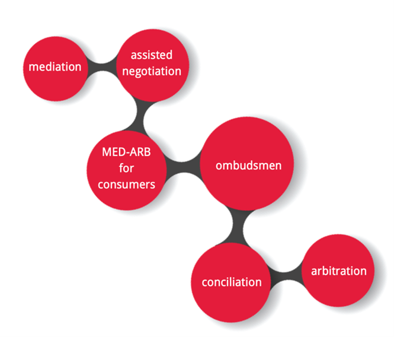

Online Dispute Resolution 在线争议解决
Questions: Select the answer you consider to be correct and then to check your response at the end of this chapter.
Q1:Which of the following is an example of ODR?
(1)A mediation conducted by conference call technology such as Skype. 通过Skype等电话会议技术进行的调解
(2)A small claims arbitration conducted by email. 通过电子邮件进行小额索赔仲裁
(3)A two-party negotiation conducted through online video communication. 双方通过在线视频沟通进行谈判
(4)All of these. (所有这些)
A1: The correct answer is ‘All of these’.
Online Dispute Resolution (ODR) refers to the use of ADR mechanisms through the Internet as a means to resolve commercial disputes. (在线争议解决(Online Dispute Resolution)是指通过互联网利用ADR机制作为解决商业纠纷的手段。)
Q2:Which of the following is considered an advantage of ODR? 以下哪一项被认为是ODR的优势？
(1)It allows parties build a stronger rapport with one another that offline methods of ADR. 与线下的ADR方式相比，它可以让当事人之间建立更牢固的关系
(2)It reduces the time and costs incurred in disputes where the parties are at a distance. 减少了当事人异地纠纷的时间和费用
(3)ODR is less susceptible to technical problems than offline forms of ADR. 线上争议解决（ODR）要比线下ADR形式更不容易受到技术问题影响
(4)All of these. (所有这些)
A2: The Correct answer is (2)
In those cases where parties are at a distance or when the need is for a cheaper and faster mechanism for resolving their disputes the use of online technology appears o be more appropriate since it avoids the physical limitations of many ADR forms. 在当事人距离较远的情况下，或者需要一种更便宜和更快的机制来解决其争议时，使用在线技术似乎更为合适，因为它避免了许多ADR形式的物理限制。
Q3:Which of the following has been suggested as a disadvantage of ODR 以下哪一项被认为是ODR（线上争议解决）的确定？
(1)It may be difficult to enforce online decisions. 执行网上的裁决可能很困难
(2)ODR requires stronger computer skills. 线上争议解决需要更强的计算机技能
(3)ODR is only a recent innovation. 线上争议解决是最近的创新
(4)All of these. (所有这些)
A3: The correct answer is (1)
While ‘online systems provide several technological advantages they may raise many issues related to how to ensure enforcement of online decisions. Despite this, judicial enforcement of these decisions has increased recently.’ 虽然在线系统提供了一些技术优势，但它们可能会引发许多与如何确保线上裁决执行的相关问题。尽管如此，这些裁决的司法执行最近有所增加。
Congratulations! 恭喜！
You have achieved a basic understanding of the Online Dispute Resolution process. 你已经对在线争议解决（ODR）流程有了基本的了解。 You have learned the following:
(1)Online Dispute Resolution (ODR) refers to the use of ADR mechanisms through the Internet as a means to resolve commercial disputes that arise from online transactions. 在线争议解决（Online Dispute Resolution）是指通过互联网使用ADR机制，作为解决在线交易产生的商业纠纷的手段
(2)Even if the Internet offers an effective means of communication, it will also lead to new causes of dispute. 即使互联网提供了一种有效的沟通手段，它也会导致新的纠纷原因
(3)ODR emerged not just because of the problems that affect courts, but also because of deficiencies that face all offline dispute resolution methods. ODR的出现不仅是因为影响法院的问题，还因为所有线下争议解决方法都面临缺陷
(4)ODR promotes the idea that it is possible to develop online versions of almost all offline dispute resolution processes. 在线争议解决（ODR）提倡一种理念，即可以开发几乎所有线下争议解决程序的在线版本
What is the aim of this module?
Understanding how the process of Online Dispute Resolution works and what the outcomes of this mechanism are. 了解在线争议解决的过程是如何运行的，以及这种机制的结果是什么
Online Dispute Resolution (ODR) ‘refers to the use of ADR mechanisms through the Internet as a means to resolve commercial disputes that arise from online transactions.’ 在线争议解决（ODR）是指通过互联网利用ADR机制，解决因网上交易而产生的商业纠纷。
It is believed that ODR ‘was technologically developed in the US and Canada… Whereas ADR moved dispute resolution “out of court”, ODR moves even further away from court to cyberspace’. 据信，ODR“在技术上是在美国和加拿大发展起来的…而ADR将争议解决“移到了法庭之外”，ODR甚至更远地从法庭移到了网络空间”。
The first decision to be rendered after online proceedings was made in 1996. The case concerned an advertisement’ promoting the availability of millions of email addresses’ for sale. Since then, a plethora of ODR ‘services have arisen within the Internet community’. 在线诉讼后，作出的第一个裁决是在1996年。该案件涉及一则广告，该广告“宣传有数百万个电子邮件地址可供出售”。从那时起，大量的ODR “服务在互联网社区中出现”。
Despite the fact that ‘the Internet offers an effective means of communication, it will also lead to new causes of dispute. 尽管互联网提供了一种有效的沟通手段，但它也会导致新的纠纷 The population of Internet users is growing every day, and the increasing development of online interaction between Internet users will inevitably result in more disputes. People will increasingly enter into electronic contracts and perform their duties without ever exchanging a sheet of paper. Therefore, ODR can be a practical and effective alternative to traditional court systems’. 互联网用户的数量每天都在增长，互联网用户之间在线互动的日益发展必然会导致更多的纠纷。人们将越来越多地签订电子合同，履行他们的职责，而不需要交换一张纸。因此，ODR可以成为传统法院系统的一种实际和有效的替代方案。
ODR ‘emerged not just because of the problems that affect only courts, but also because of deficiencies that fact all offline dispute resolution methods. 线上争议解决的出现不仅是因为只影响法院的问题，还因为所有线下争议解决方法都存在缺陷。
Its founding idea is that it is possible to develop online versions of almost all offline dispute resolution processes’. ODR mechanisms may vary significantly. These include ‘assisted negotiation; mediation; conciliation; ombudsmen, MED-ARB for consumers, arbitration, etc.’ 它的创始理念是，有可能开发几乎所有线下争议解决程序的在线版本“。ODR机制可能差别很大。这包括 “协助谈判”；
Although it was traditionally developed as a means to resolve online related disputes, ODR can be used to resolve a wide variety of disputes. 虽然传统上它是作为解决线上相关争议的一种手段而发展起来的，但ODR可以用于解决各种各样的争议
In those cases ‘where parties are at a distance or when the need is for a cheaper and faster mechanism for resolving their disputes’ the use of online technology appears to be more appropriate since it avoids the physical limitations of many ADR forms. 在“当事人相距遥远或需要更便宜，更快捷的纠纷解决机制”的情况下，使用线上技术似乎更为合适，因为它避免了许多ADR形式的物理限制。
While ‘online systems provide several technological advantages they may raise many issues related to how to ensure enforcement of online decisions’. 虽然“在线系统提供了一些技术优势，但它们可能会引发许多与如何确保线上裁决执行的相关问题”。
Despite this, judicial enforcement of these decisions has increased during the last few years.’ Of all the various forms of ADR currently in mainstream use, ODR is undoubtedly the most recent innovation. 尽管如此，这些裁决的司法执行在过去几年中有所增加。在目前主流使用的各种形式的ADR中，ODR无疑是最新的创新。